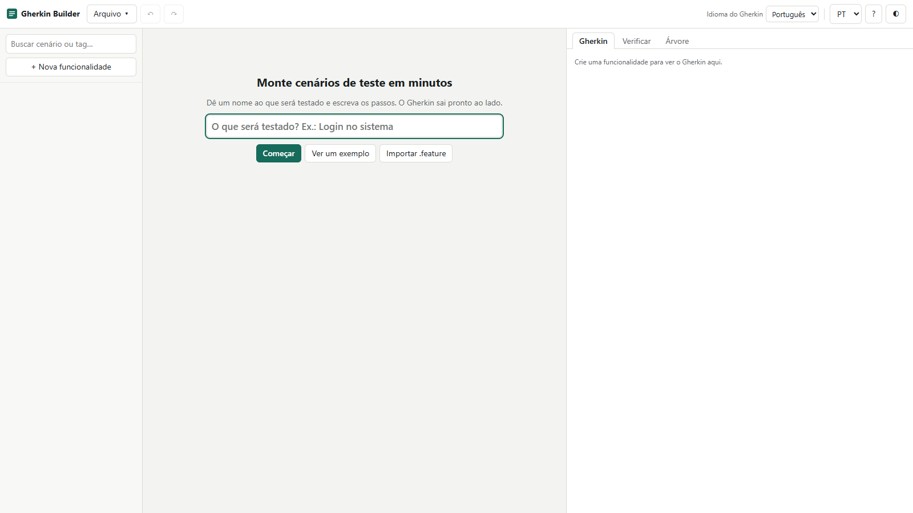
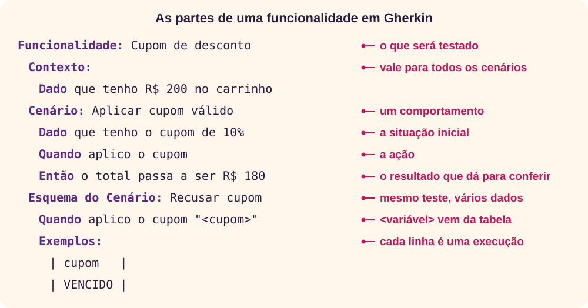
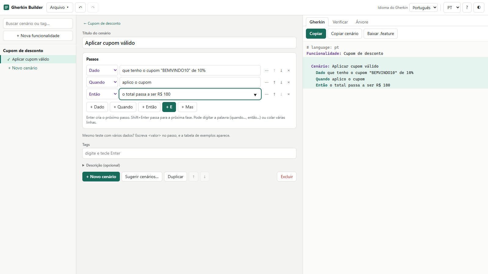
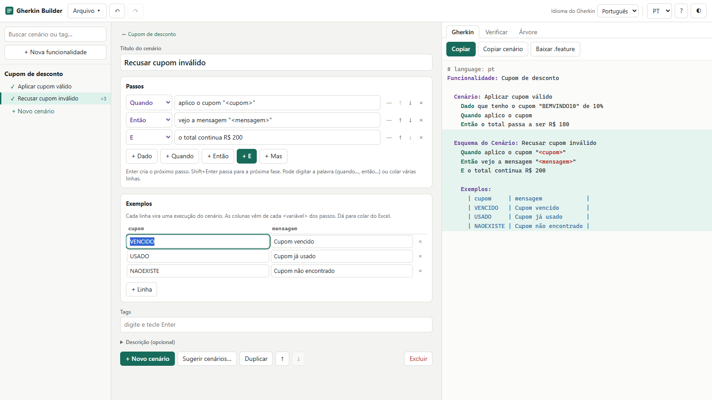
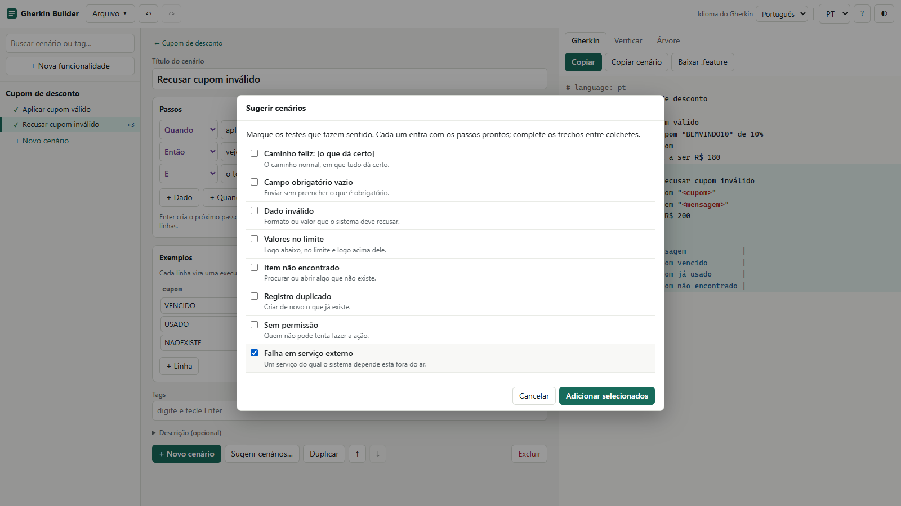
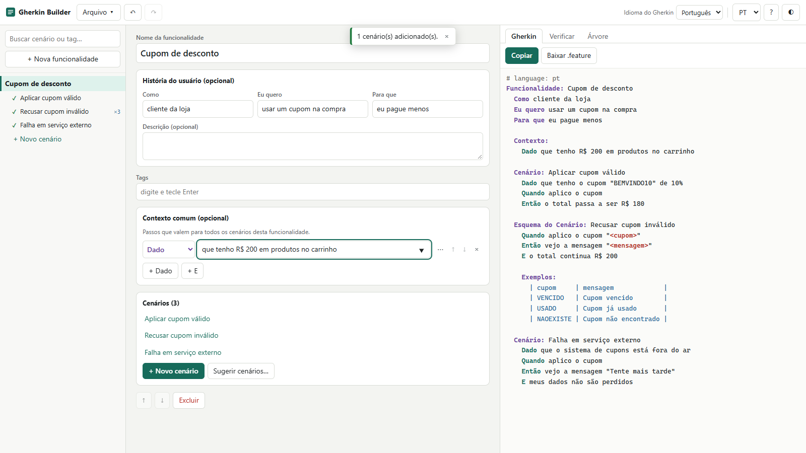
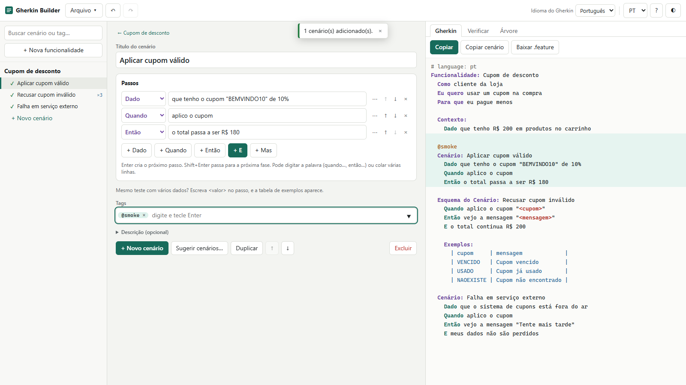
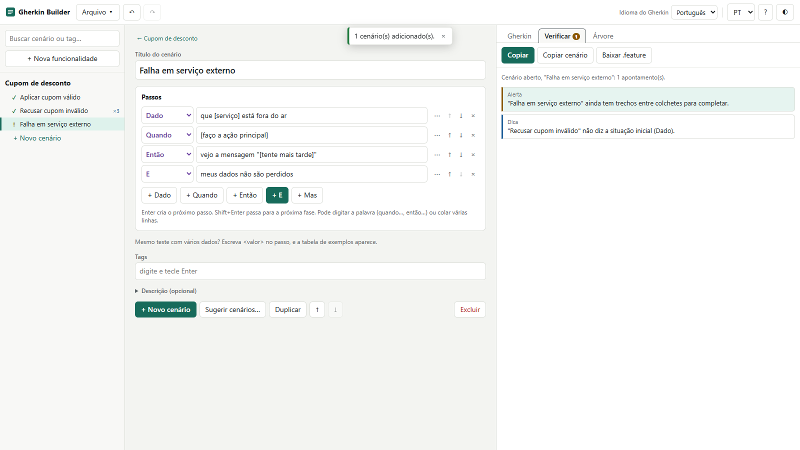
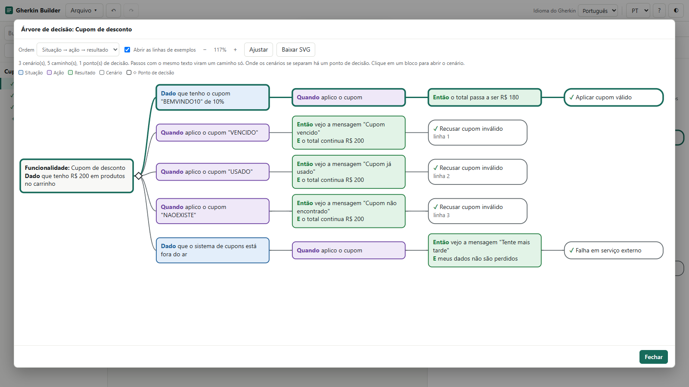
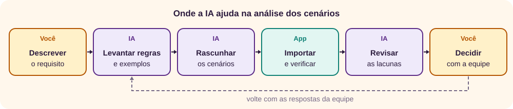

O que é o Gherkin Builder
O Gherkin Builder ajuda a escrever cenários de teste no padrão Gherkin, usado em BDD, sem precisar decorar a sintaxe. [1] Você preenche os passos, e o arquivo .feature sai pronto ao lado. É um único arquivo HTML, que funciona no navegador, sem instalação nem conta.

Por que escrever em Gherkin? Porque o mesmo texto serve para quem pede, quem desenvolve e quem testa, e ainda pode virar teste automatizado. Para entender o BDD em si, veja o tutorial de BDD. [2]
O app não executa testes: ele produz o arquivo. Para executar, é preciso uma ferramenta como o Cucumber e o código de cada passo.
Como o app trata os seus dados
- Nada sai do seu computador. O arquivo bloqueia conexões de rede.
- O projeto fica no navegador. Ele é guardado automaticamente e reaparece ao reabrir o app. Para ter uma cópia própria, salve em JSON.
Gherkin em cinco minutos
Gherkin usa palavras-chave para dar estrutura a especificações executáveis. [3] Cada cenário é um exemplo concreto de uma regra do negócio.

| Palavra-chave | Para que serve |
|---|---|
| Funcionalidade | Descreve o que será testado e agrupa os cenários. Cada arquivo tem uma só. |
| Contexto | Passos que valem para todos os cenários do arquivo. |
| Cenário | Um exemplo concreto de um comportamento. |
| Dado | A situação inicial, a cena do cenário. |
| Quando | A ação ou o evento. |
| Então | O resultado esperado, que precisa ser observável. |
| E, Mas | Continuam o passo anterior, para a leitura fluir. |
| Esquema do Cenário e Exemplos | Repetem o cenário com valores diferentes, uma execução por linha. |
@tag | Marca funcionalidades e cenários, para agrupar. |
As palavras-chave existem em dezenas de idiomas, e a primeira linha do arquivo, # language: pt, diz qual está em uso. Sem ela, vale o inglês. [3] [5] O app sempre escreve essa linha.
Seu primeiro arquivo: um cupom de desconto
Em cerca de 10 minutos, você vai especificar um cupom de desconto em uma loja virtual. Se o app abrir com outro projeto, use Arquivo ▾ → Novo projeto.
1. Dê um nome e escreva o primeiro cenário
Só com o teclado:
- No campo inicial, digite
Cupom de descontoe pressione Enter. - No título, digite
Aplicar cupom válidoe pressione Enter. - Digite
que tenho o cupom "BEMVINDO10" de 10%e pressione Shift+Enter. O passo seguinte já vira a ação. - Digite
aplico o cupome pressione Shift+Enter. O passo seguinte já vira o resultado. - Digite
o total passa a ser R$ 180.

2. Teste vários cupons de uma vez
- Pressione Ctrl+Enter para criar outro cenário, digite
Recusar cupom inválidoe pressione Enter. - Digite
quando aplico o cupom "<cupom>"e pressione Enter. Escrever a palavra no começo troca a palavra-chave, e<cupom>faz a tabela de exemplos aparecer. - Digite
então vejo a mensagem "<mensagem>"e pressione Enter. - Digite
o total continua R$ 200. - Copie o bloco abaixo, clique na primeira célula de Exemplos e cole. O mesmo funciona com células copiadas de uma planilha.
VENCIDO Cupom vencido
USADO Cupom já usado
NAOEXISTE Cupom não encontrado
3. Peça uma sugestão
- Clique em Sugerir cenários…, marque Falha em serviço externo e clique em Adicionar selecionados.
- O primeiro trecho entre colchetes já vem selecionado. Digite
o sistema de cuponse pressione Enter: o app vai ao trecho seguinte. - Digite
aplico o cupom, pressione Enter e digiteTente mais tarde.

4. Complete a funcionalidade
- Clique no nome da funcionalidade, na lista à esquerda.
- Em História do usuário (opcional), preencha com
cliente da loja,usar um cupom na compraeeu pague menos. - Em Contexto comum (opcional), clique em + Dado e digite
que tenho R$ 200 em produtos no carrinho. Esse passo agora vale para todos os cenários. - Clique no primeiro cenário na lista e, em Tags, digite
smokee pressione Enter.

5. Verifique e leve o arquivo
Abra a aba Verificar. Deve aparecer Nenhum problema encontrado. Volte à aba Gherkin e use Copiar ou Baixar .feature. O resultado é este:
# language: pt
Funcionalidade: Cupom de desconto
Como cliente da loja
Eu quero usar um cupom na compra
Para que eu pague menos
Contexto:
Dado que tenho R$ 200 em produtos no carrinho
@smoke
Cenário: Aplicar cupom válido
Dado que tenho o cupom "BEMVINDO10" de 10%
Quando aplico o cupom
Então o total passa a ser R$ 180
Esquema do Cenário: Recusar cupom inválido
Quando aplico o cupom "<cupom>"
Então vejo a mensagem "<mensagem>"
E o total continua R$ 200
Exemplos:
| cupom | mensagem |
| VENCIDO | Cupom vencido |
| USADO | Cupom já usado |
| NAOEXISTE | Cupom não encontrado |
Cenário: Falha em serviço externo
Dado que o sistema de cupons está fora do ar
Quando aplico o cupom
Então vejo a mensagem "Tente mais tarde"
E meus dados não são perdidos
Conferimos esse arquivo com o parser oficial do Cucumber: ele é aceito e gera 5 execuções, 1 de cada cenário comum e 3 do esquema, todas com o passo do contexto. [9]
↑ Voltar ao topoA interface
| Área | Para que serve |
|---|---|
| Barra superior | Arquivo ▾, desfazer e refazer, Idioma do Gherkin, idioma da interface, ajuda (?) e tema (◐). |
| Lista à esquerda | Funcionalidades e cenários, com busca por texto ou tag. ✓ indica cenário sem problemas, e ! indica alerta ou erro. |
| Centro | O editor da funcionalidade ou do cenário selecionado. |
| Direita | O Gherkin ao vivo e as abas Verificar e Árvore. Clicar em um trecho do Gherkin abre aquele cenário. |
| Celular | As três áreas viram telas: Lista, Editar e Gherkin. |
O idioma da interface e o do Gherkin são independentes. Dá para usar a tela em português e gerar o arquivo em inglês: as palavras-chave mudam, mas o texto que você escreveu não é traduzido.
Escrever passos rápido
- Enter e Shift+Enter: Enter cria um passo que continua o anterior. Shift+Enter passa para a próxima fase: situação, ação e resultado.
- Digite a palavra: começar o passo com a palavra-chave e um espaço, como
quando, troca o tipo do passo. - Cole uma lista: cada linha vira um passo. Marcadores como
-e1.são removidos, e a palavra-chave no começo da linha é reconhecida. - Autocompletar: o campo sugere passos já usados no projeto. Reaproveitar a mesma frase evita ter dois textos para a mesma coisa.
- Trechos entre colchetes: ao entrar no passo, o trecho fica selecionado, e Enter vai ao próximo.
Passos vazios não saem no Gherkin, então não é preciso apagá-los antes de copiar. O botão ⋯ de cada passo abre os anexos.
Mesmo teste com vários dados
Se dois cenários só mudam nos valores, una os dois. Escreva <nome> em um passo ou no título: o cenário passa a ser Esquema do Cenário, e a tabela de Exemplos aparece com uma coluna para cada variável. [3]
- Colar de uma planilha preenche várias linhas e colunas. Com a tabela cheia, Enter na última linha cria outra.
- Uma célula vazia é válida, como em um teste de senha em branco. O app só aponta erro se a coluna inteira estiver vazia.
- Renomear a variável no passo cria uma coluna nova, e os valores da antiga não passam para ela.
Para escolher os valores, pense em classes de equivalência e em valores limite: um representante de cada grupo de dados que o sistema trata igual, e os valores logo abaixo, nos limites e logo acima deles. [7] [8]
Tabelas de dados e textos longos
Alguns passos precisam de mais dados do que cabe em uma frase. No botão ⋯ do passo:
- Anexar tabela de dados
- Para listas de valores no próprio passo, como os itens de um carrinho. Use + Linha e + Coluna.
- Anexar texto longo
- Para um trecho maior, como o corpo de um e-mail. [3]
Tabela de dados pertence a um passo, enquanto a tabela de exemplos repete o cenário inteiro. Os caracteres especiais, como | e \, são tratados pelo app.
História, contexto e tags
- História do usuário (opcional)
- Quem, o quê e para quê. Entra como descrição da funcionalidade, e dá o porquê dos cenários.
- Contexto comum (opcional)
- Passos repetidos em todos os cenários. A documentação oficial recomenda mantê-lo curto; acima de 4 linhas, vale reunir os detalhes em passos de nível mais alto. [3]
- Tags
- Digite e pressione Enter, vírgula ou espaço. O app acrescenta o
@e troca espaços por hífen. A busca da lista aceita tags, como@smoke.
Sugerir cenários
Sugerir cenários… traz oito modelos. Eles não leem o seu sistema: são pontos de partida, com trechos entre colchetes para completar.
| Modelo | O que testa |
|---|---|
| Caminho feliz: [o que dá certo] | O caminho normal, em que tudo dá certo. |
| Campo obrigatório vazio | Enviar sem preencher o que é obrigatório. |
| Dado inválido | Formato ou valor que o sistema deve recusar. |
| Valores no limite | Logo abaixo, no limite e logo acima dele. |
| Item não encontrado | Procurar ou abrir algo que não existe. |
| Registro duplicado | Criar de novo o que já existe. |
| Sem permissão | Quem não pode tenta fazer a ação. |
| Falha em serviço externo | Um serviço do qual o sistema depende está fora do ar. |
Os modelos entram no idioma do Gherkin do projeto. Enquanto houver colchetes, a aba Verificar avisa.
Verificar
A aba Verificar revisa o projeto enquanto você escreve, e clicar em um item abre o cenário. Os apontamentos do cenário aberto vêm primeiro.

| Nível | O que aponta |
|---|---|
| Erro | Cenário sem passos, sem resultado esperado, coluna de exemplos toda vazia ou descrição que seria lida como comando do Gherkin. |
| Alerta | Sem ação, resultado antes da ação, mais de uma ação, resultado vago, título vazio ou repetido, exemplos repetidos, trechos por completar e ação no contexto. |
| Dica | Detalhe de tela, sem situação inicial, cenário com mais de 8 passos e funcionalidade sem cenários. |
A verificação olha a forma do texto, não o sentido: uma regra errada, bem escrita, passa sem aviso. As listas de palavras vagas e de detalhes de tela são curtas e servem de lembrete.
Árvore de decisão
A aba Árvore mostra os cenários da funcionalidade como caminhos, da situação ao resultado. Passos com o mesmo texto viram um caminho só, e onde os cenários se separam há um ponto de decisão, marcado com um losango.

- Para ver o que falta: um ramo que só tem o caminho normal, sem nenhum caso de erro, costuma indicar um cenário esquecido.
- Avisos: a aba aponta o mesmo caminho com resultados diferentes (losango preenchido), cenários com os mesmos passos e caminhos sem resultado.
- Ordem: Situação → ação → resultado agrupa por situação inicial, e Ação → situação → resultado agrupa por ação. A segunda ajuda a ver, para uma mesma ação, o que muda conforme a situação.
- Exemplos: Abrir as linhas de exemplos mostra cada linha como um ramo, com os valores no lugar das variáveis.
- Navegar: clicar em um bloco abre o cenário, e o caminho do cenário aberto fica destacado. Ampliar abre a árvore em uma janela grande, e Baixar SVG salva a imagem.
A árvore compara o texto dos passos, sem considerar maiúsculas nem espaços repetidos. Duas frases diferentes para a mesma coisa viram dois caminhos, então ela não julga regras de negócio: reutilize as frases com o autocompletar para que os caminhos se juntem.
O que faz um bom cenário
A documentação do Cucumber recomenda de 3 a 5 passos por exemplo e resultados observáveis. [3] E pede que o cenário descreva o quê, não o como: [4] o estilo que descreve cliques fica preso à tela atual e dá mais trabalho para manter. Compare:
| Preso à tela | Descreve o comportamento |
|---|---|
Quando clico no campo cupom, digito BEMVINDO10 e clico em Aplicar | Quando aplico o cupom BEMVINDO10 |
Então funciona corretamente | Então o total passa a ser R$ 180 |
Uma pergunta ajuda: este texto teria de mudar se a tela mudasse? [4] Há casos em que o detalhe é o próprio objeto do teste; aí, mantenha-o.
Copiar, salvar e importar
| Opção | O que faz |
|---|---|
| Copiar e Copiar cenário | Levam a funcionalidade inteira, ou só o cenário aberto. |
| Baixar .feature | Baixa o arquivo da funcionalidade aberta. |
| Baixar todas as funcionalidades (.zip) | Um arquivo .feature para cada funcionalidade. |
| Salvar projeto (.json) Ctrl+S | O projeto inteiro, para guardar ou enviar. É a única cópia de segurança real. |
| Importar .feature ou JSON… e Colar Gherkin… | Trazem arquivos existentes. Um .feature entra como nova funcionalidade, e um JSON substitui o projeto, após confirmar. |
| Imprimir | Imprime o Gherkin da funcionalidade aberta. |
O projeto no navegador some se você limpar os dados do site. Salve em JSON o que importa.
Prompts de IA
A análise costuma travar antes de escrever o primeiro cenário: as regras estão espalhadas, ninguém pensou nas exceções e os exemplos faltam. Uma IA ajuda a transformar um requisito em perguntas, regras e rascunhos. Ela também erra com segurança: inventa regras de negócio, supõe mensagens e aprova cenários ruins. Trate a saída como rascunho de um colega apressado. Para escrever prompts melhores, veja o tutorial de prompts.

Antes de colar: requisitos podem conter dados de clientes, regras e valores sigilosos. Troque por dados fictícios e siga a política da sua organização para uso de IA. O app não envia nada para a rede, mas o serviço de IA recebe o que você colar nele.
Troque os trechos entre colchetes e cole na ferramenta de IA que você usa. Os prompts seguem a ordem do trabalho, mas cada um funciona sozinho.
1. Entrevistar antes de escrever
Faz a IA descobrir o que falta, em vez de supor. As regras e os exemplos seguem a ideia do Example Mapping, com as dúvidas registradas à parte. [6]
Você é um analista de testes experiente em BDD.
Quero especificar este requisito: [descreva em poucas frases].
Antes de propor qualquer cenário, me entreviste:
- Faça uma pergunta por vez e espere minha resposta.
- Cubra: quem usa, o que quer conseguir e por quê; as regras de negócio; o que acontece nos limites; dados inválidos, ausentes ou repetidos; permissões; o que acontece quando um serviço falha; e como saber que deu certo.
- Peça um exemplo concreto, com valores, para cada regra.
- Não invente respostas. Se eu não souber, registre como dúvida.
Ao final, entregue: a história (quem, o que, para quê); as regras, cada uma com seus exemplos; e a lista de dúvidas, com quem pode responder cada uma.2. Transformar um requisito em regras
Para histórias, atas e documentos. Pede a origem de cada regra, o que facilita conferir, e aponta os casos sem resposta.
A partir do texto abaixo, extraia as regras para escrever cenários de teste.
Texto:
[cole a história, a ata ou o documento]
Entregue:
1. Tabela de regras: regra, o trecho do texto que a sustenta e um exemplo concreto, com entrada e resultado esperado.
2. Termos ambíguos, como "rápido", "válido" ou "quando possível", e o que falta definir em cada um.
3. Casos que o texto não cobre, e regras que se contradizem.
4. Perguntas para esclarecer cada lacuna.
Não preencha lacunas por conta própria. O que não estiver no texto vai para as perguntas. Se um exemplo precisar de um valor que o texto não dá, marque como [a definir].3. Gerar a funcionalidade em Gherkin
Devolve texto que o app importa. Cole o resultado do prompt 1 ou 2 no fim.
Escreva uma funcionalidade em Gherkin, a partir das informações no fim.
Responda só com o Gherkin, sem comentários e sem cercas de código.
Formato:
- Primeira linha: # language: [pt, en, it ou es].
- Uma única funcionalidade, sem Rule. Use as palavras-chave oficiais do idioma, como no exemplo.
- Dois espaços de recuo por nível.
- Use o esquema com exemplos quando o mesmo teste mudar só nos dados, com <variável> nos passos.
- Passos em comum a todos os cenários vão no contexto, com no máximo 4 linhas.
Regras:
- Um comportamento por cenário, com 3 a 5 passos e uma única ação.
- Descreva o que a pessoa quer fazer, não em qual botão clica nem como a tela funciona.
- O resultado precisa ser observável, com valor ou mensagem concretos. Evite "funciona" ou "corretamente".
- Cubra o caminho normal, os dados inválidos, os limites e as falhas citadas nas informações.
- Não invente regras, valores ou mensagens. Onde faltar um dado, escreva [a definir], e o app vai apontar o trecho para completar.
Exemplo do formato:
# language: pt
@senha
Funcionalidade: Recuperar senha
Como cliente cadastrado
Eu quero recuperar minha senha
Para que eu volte a entrar
Cenário: Pedir nova senha
Dado que tenho uma conta ativa
Quando peço uma nova senha
Então recebo um e-mail com o link de troca
Esquema do Cenário: Recusar pedido inválido
Quando peço uma nova senha para "<email>"
Então vejo a mensagem "<mensagem>"
Exemplos:
| email | mensagem |
| nao-e-email | E-mail inválido |
| semconta@exemplo.com | Conta não encontrada |
Informações:
[cole o resultado do prompt 1 ou 2, ou descreva o requisito]4. Encontrar o que faltou
Procura caminhos não cobertos, usando classes de equivalência e valores limite. [7] [8]
Analise a cobertura destes cenários e aponte o que falta.
Regras do negócio:
[cole as regras, ou escreva "não tenho as regras à parte"]
Cenários:
[cole o Gherkin]
Faça:
1. Para cada dado de entrada, liste as classes de equivalência: válidos e inválidos.
2. Para cada faixa ou limite, liste os valores logo abaixo, exatamente nos extremos e logo acima.
3. Monte uma tabela: regra ou classe, cenário que cobre e situação (coberto, parcial ou faltando).
4. Liste o que nenhum cenário trata: permissões, repetição, estados intermediários, falha de serviço e concorrência.
5. Sugira só os cenários que faltam, em Gherkin, ordenados pelo risco de não testar, explicando o risco em uma frase.
Não invente regras: se a cobertura depender de uma regra que não foi informada, transforme em pergunta. Marque os valores que você supôs como [a definir].5. Revisar os cenários
Copie o Gherkin do app e cole. É uma segunda opinião, não uma aprovação.
Revise estes cenários como um analista de testes experiente em BDD.
[cole o Gherkin]
Procure:
- Cenários que testam mais de um comportamento, ou que têm mais de uma ação.
- Resultados que não dá para observar, ou vagos, como "funciona".
- Detalhes de tela ou de implementação nos passos.
- Dado que descreve uma ação, em vez da situação inicial, e dependência entre cenários.
- Contexto longo, ou que não vale para todos os cenários.
- Títulos que não dizem o que muda em relação aos outros.
- Linguagem diferente para a mesma coisa, e termos que o negócio não usaria.
- Exemplos repetidos, ou que não mudam o resultado.
Entregue uma tabela com: cenário, problema, por que importa, sugestão e gravidade (alta, média ou baixa). Não reescreva tudo. Não confirme que está bom só porque não achou problemas, e diga o que não dá para avaliar sem conhecer as regras.6. Preparar os valores dos exemplos
Devolve os valores prontos para colar na tabela de exemplos.
Prepare valores de teste para este esquema de cenário.
Cenário:
[cole o esquema com as <variáveis>]
Regras e limites:
[descreva o que se sabe sobre cada dado]
Entregue:
1. A tabela de valores como texto, com uma linha por caso e as colunas separadas por tabulação, na mesma ordem das variáveis, sem linha de cabeçalho, pronta para colar em uma planilha ou no app.
2. Depois, uma lista com o motivo de cada linha: a classe ou o limite que ela exercita.
Regras:
- Inclua valores válidos, inválidos, vazios, nos limites e com caracteres especiais, quando fizer sentido.
- Cada linha precisa testar algo que as outras não testam.
- Não use dados reais de pessoas: invente nomes, documentos e e-mails com domínio de exemplo.
- Se o resultado esperado não puder ser deduzido das regras, escreva [a definir] na célula.7. Reescrever cenários presos à tela
Passa do estilo que descreve cliques para o que descreve o comportamento. [4]
Reescreva estes cenários no estilo declarativo, descrevendo o comportamento em vez dos cliques.
[cole o Gherkin]
Regras:
- Mantenha o idioma e as palavras-chave.
- Troque "clico", "digito" e nomes de campos ou botões pelo que a pessoa quer conseguir.
- Mantenha os valores que importam para a regra, e remova os que não mudam o resultado.
- Não mude o comportamento testado. Se um detalhe de tela for o próprio objeto do teste, mantenha e explique por quê.
- Pergunte a si mesmo: este texto teria de mudar se a tela mudasse?
Entregue o Gherkin reescrito e, depois, uma lista do que saiu de cada cenário, para eu conferir que nada importante se perdeu.8. Preparar a conversa com a equipe
Transforma as dúvidas em uma pauta curta para negócio, desenvolvimento e teste.
Prepare a conversa da equipe sobre estes cenários.
Cenários:
[cole o Gherkin]
Dúvidas que já tenho:
[liste, ou escreva "nenhuma"]
Entregue, em até uma página:
1. Em duas frases, o que está sendo especificado.
2. As regras assumidas nos cenários e que ninguém confirmou.
3. Até 5 perguntas para o negócio, 5 para o desenvolvimento e 5 para o teste, em ordem de risco.
4. Os cenários que eu mostraria primeiro, e por quê.
5. O que deixar fora deste ciclo, e o risco de deixar.
Use só o que está nos cenários e nas dúvidas. Não afirme como o sistema funciona: apresente como pergunta.Como levar a resposta da IA para o app
- Copie o Gherkin da resposta, sem as cercas
```. - No app, use Arquivo ▾ → Colar Gherkin…, cole e clique em Importar. Ele entra como uma nova funcionalidade.
- Abra a aba Verificar e confira cada item.
Se o projeto já tiver outra funcionalidade, as palavras-chave seguem o Idioma do Gherkin do projeto, e o texto dos passos não é traduzido. Os valores do prompt 6 vêm separados por tabulação: clique na primeira célula de Exemplos e cole.
| Sintoma | Causa | Solução |
|---|---|---|
| “linha 1 não reconhecida” | A resposta tem texto ou cercas antes do Gherkin, ou um passo está sem palavra-chave. | Cole só a partir de # language, e corrija a linha indicada. |
| “o idioma "fr" não é aceito” | A IA usou um idioma que o app não trata. | Peça o Gherkin em português, inglês, italiano ou espanhol. |
| “nenhuma funcionalidade encontrada” | Falta a linha da funcionalidade, ou as palavras-chave são de outro idioma sem o cabeçalho. | Peça o arquivo completo, com # language. |
| “As regras (Rule) viraram cenários comuns” | A IA agrupou cenários com Rule, que o app não mantém. | Sem problema para o Gherkin gerado, mas a regra sai do texto. Se ela importa, cite-a na descrição. |
Atalhos de teclado
| Tecla | Ação |
|---|---|
| Enter | No título, vai ao primeiro passo. No passo, vai ao próximo trecho a completar ou cria um passo. |
| Shift+Enter | Cria um passo na próxima fase. |
| Ctrl+Enter | Cria um cenário. |
| Alt+↑ ou ↓ | Move o passo. |
| Backspace em passo vazio | Exclui o passo. |
| Ctrl+Z e Ctrl+Y | Desfazem e refazem, inclusive o que está sendo digitado. |
| Ctrl+S | Salva o projeto em JSON. |
Erros comuns e limitações
Erros de escrita
- Testar duas coisas no mesmo cenário. Se há duas ações, são dois cenários.
- Resultado que não dá para conferir. "Funciona" não diz o que olhar. Escreva o valor ou a mensagem.
- Só o caminho feliz. Use Sugerir cenários… para lembrar dos outros.
- Cenário que depende de outro. Cada um precisa fazer sentido sozinho.
Limitações
- O app não executa testes nem testa o sistema: ele só produz o arquivo.
- Importação:
Rulevira cenário comum, vários blocos de exemplos são unidos, e comentários, tags e nomes de exemplos se perdem. O app avisa quando isso acontece. - Idiomas: só português, inglês, italiano e espanhol.
- Navegadores: o app foi testado no Chromium. Outros navegadores e celulares reais não foram testados.
Revisão rápida
Tente responder antes de abrir cada pergunta.
1. O que cada fase do cenário descreve?
A situação inicial, a ação e o resultado esperado, nessa ordem.
2. O que acontece ao escrever <valor> em um passo?
O cenário passa a ser um esquema, e aparece a tabela de exemplos com uma coluna para a variável. Cada linha vira uma execução.
3. Qual é a diferença entre tabela de dados e tabela de exemplos?
A tabela de dados pertence a um passo. A de exemplos repete o cenário inteiro, uma vez por linha.
4. Por que evitar "clico no botão" nos passos?
Porque o cenário fica preso à tela atual e precisa mudar sempre que ela mudar. Descreva o que a pessoa quer conseguir.
5. A aba Verificar não aponta nada. A regra de negócio está certa?
Não necessariamente. Ela olha a forma do texto, não o sentido.
6. Para que serve o contexto?
Para os passos que valem para todos os cenários do arquivo. Mantenha-o curto.
7. O app executa os testes?
Não. Ele produz o arquivo. Executar exige uma ferramenta como o Cucumber e o código de cada passo.
8. A IA escreveu os cenários e o app não aponta problemas. Eles estão prontos?
Não. Isso mostra que o texto é válido e bem formado. As regras e os valores podem ter sido inventados: confirme-os com quem conhece o negócio.
Referências
- Giovani Perotto Mesquita, “Gherkin Builder”, aplicativo em um único arquivo HTML, giovanipm.github.io/gherkin-builder.html.
- Giovani Perotto Mesquita, “BDD”, tutorial deste site, giovanipm.github.io/BDD.html.
- Cucumber, “Reference” (Gherkin), documentação, acesso em 01/11/2026, cucumber.io/docs/gherkin/reference.
- Cucumber, “Writing better Gherkin”, documentação, acesso em 01/11/2026, cucumber.io/docs/bdd/better-gherkin.
- Cucumber, “Localisation”, documentação, acesso em 01/11/2026, cucumber.io/docs/gherkin/languages.
- Cucumber, “Example Mapping”, documentação, acesso em 01/11/2026, cucumber.io/docs/bdd/example-mapping.
- Wikipedia (em inglês), “Boundary-value analysis”, acesso em 01/11/2026, en.wikipedia.org/wiki/Boundary-value_analysis.
- Wikipedia (em inglês), “Equivalence partitioning”, acesso em 01/11/2026, en.wikipedia.org/wiki/Equivalence_partitioning.
- Cucumber,
@cucumber/gherkin42.0.1, o parser oficial, usado para validar os arquivos deste tutorial, github.com/cucumber/gherkin.